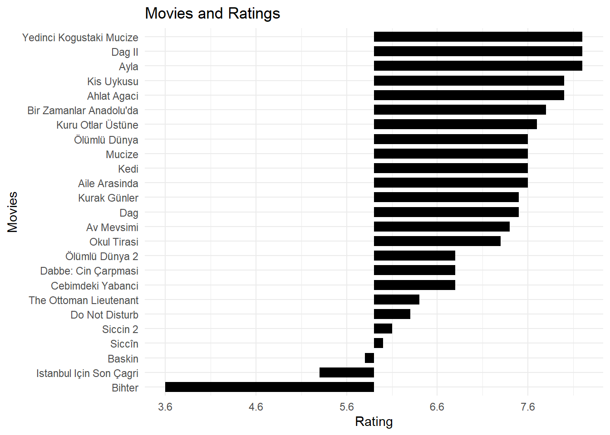
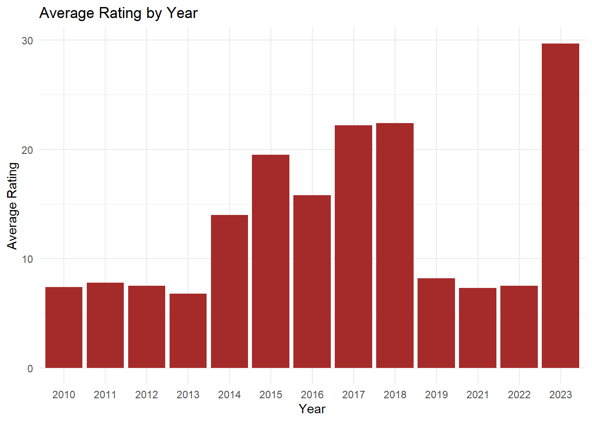
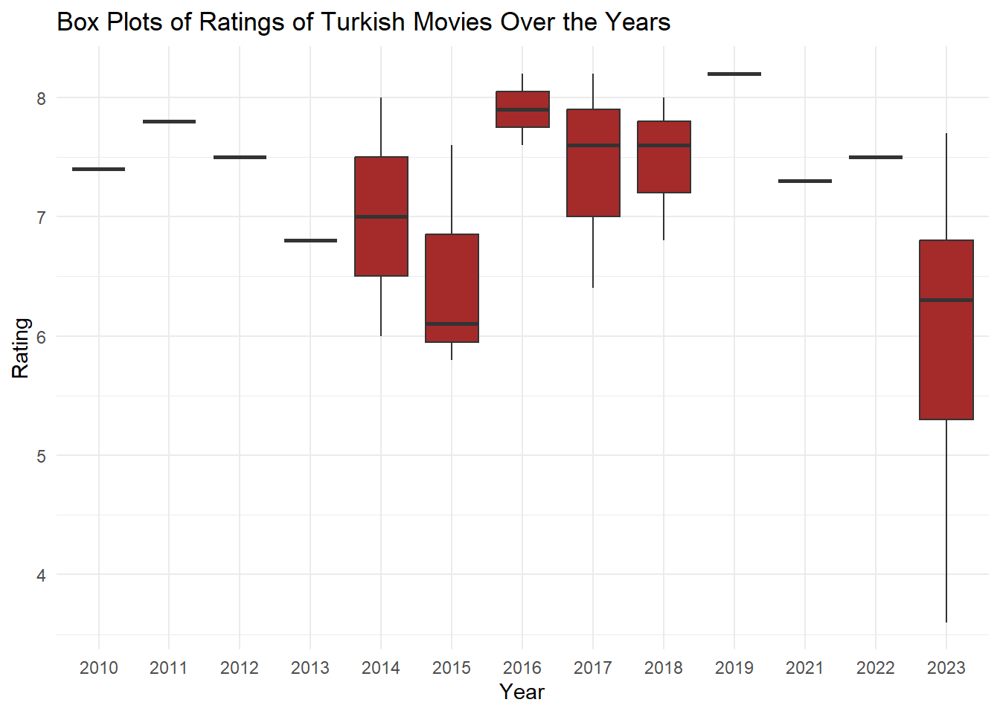
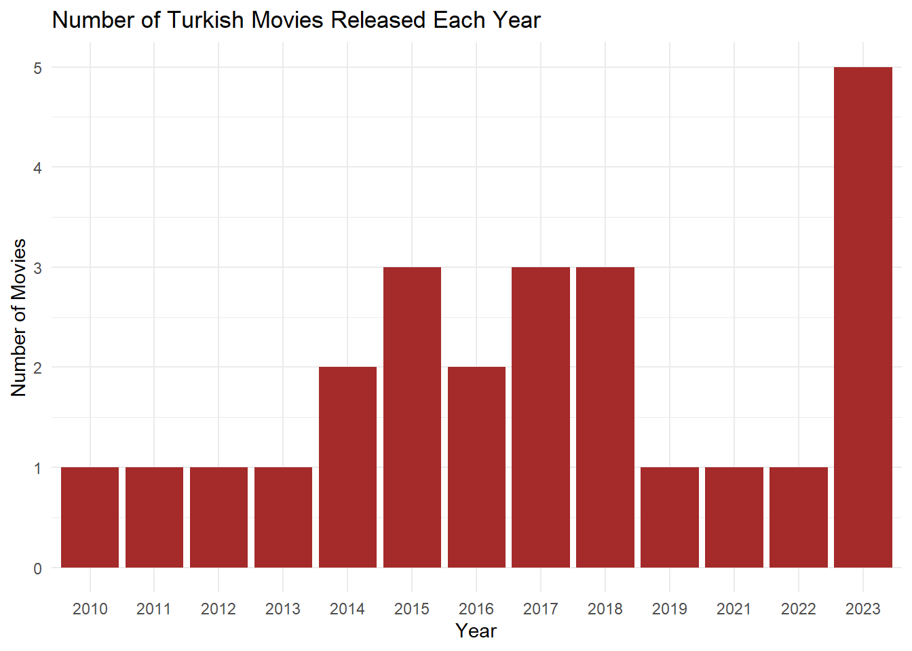
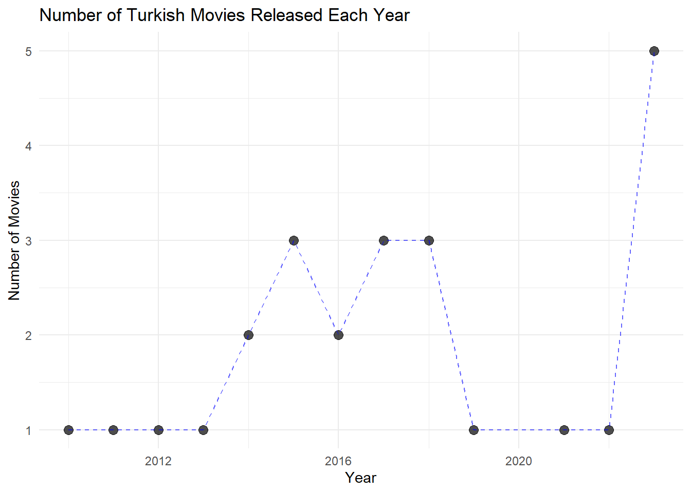
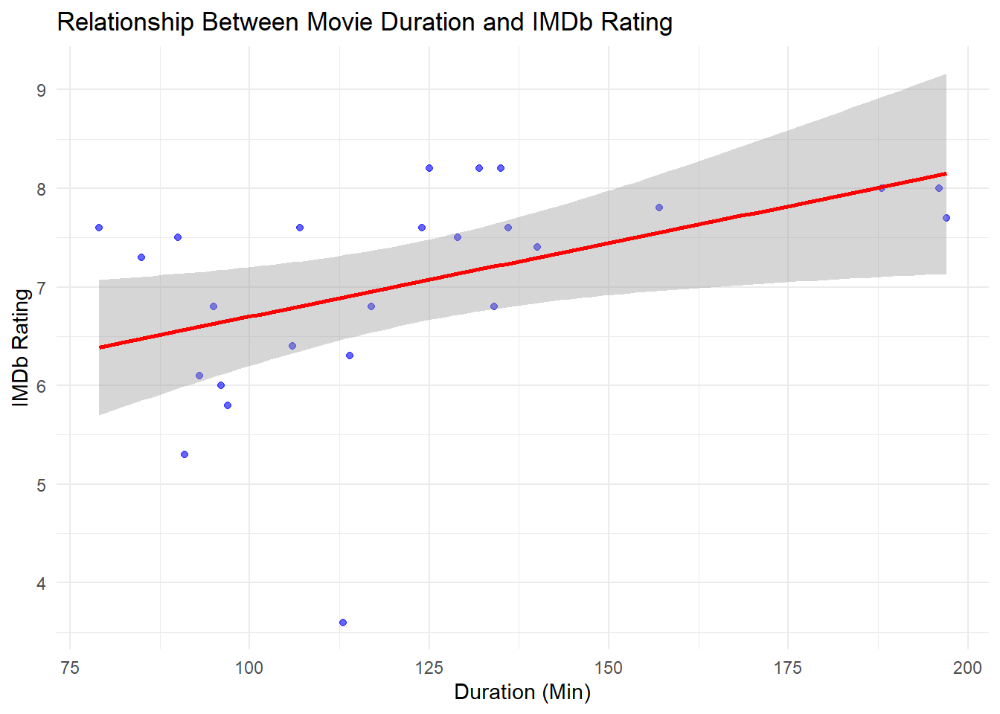
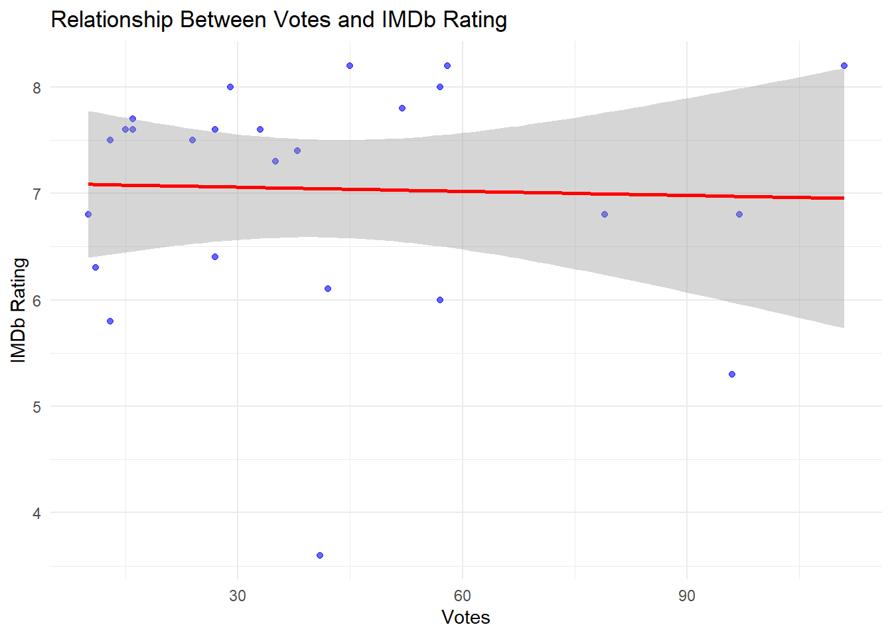

Title Year Duration Rating Votes
1 Kuru Otlar Üstüne 2023 197 7.7 16K
2 Yedinci Kogustaki Mucize 2019 132 8.2 58K
3 Baskin 2015 97 5.8 13K
4 Kis Uykusu 2014 196 8.0 57K
5 Cebimdeki Yabanci 2018 95 6.8 10K
6 Ayla 2017 125 8.2 45K
7 Bir Zamanlar Anadolu'da 2011 157 7.8 52K
8 Ahlat Agaci 2018 188 8.0 29K
9 Istanbul Için Son Çagri 2023 91 5.3 9.6K
10 Dag II 2016 135 8.2 111K
11 Kurak Günler 2022 129 7.5 13K
12 Dabbe: Cin Çarpmasi 2013 134 6.8 7.9K
13 Mucize 2015 136 7.6 15K
14 Bihter 2023 113 3.6 4.1K
15 Siccîn 2014 96 6.0 5.7K
16 Ölümlü Dünya 2 2023 117 6.8 9.7K
17 Ölümlü Dünya 2018 107 7.6 33K
18 Kedi 2016 79 7.6 16K
19 The Ottoman Lieutenant 2017 106 6.4 27K
20 Dag 2012 90 7.5 24K
21 Av Mevsimi 2010 140 7.4 38K
22 Do Not Disturb 2023 114 6.3 11K
23 Okul Tirasi 2021 85 7.3 3.5K
24 Aile Arasinda 2017 124 7.6 27K
25 Siccin 2 2015 93 6.1 4.2K
Part 3.
a) Arrange your data frame in descending order by Rating. Present the top 5 and bottom 5 movies based on user ratings. Have you watched any of these movies? Do you agree or disagree with their current IMDb Ratings?
I watched this movie Yedinci Kogustaki Mucize and it really deserves to be the leader. And I completely agree with the last 5 in the list because I generally do not prefer Turkish horror movies.
# Arrange the data frame in descending order by Ratingmovies <- imdb_movies_datas[order(imdb_movies_datas$Rating, decreasing =TRUE),]# Top 5 and bottom 5 movies based on user ratingstop5_movies <-head(movies, 5)bottom5_movies <-tail(movies, 5)# Print top and bottom moviescat("Top 5 Movies:\n")
Top 5 Movies:
print(top5_movies)
Title Year Duration Rating Votes
2 Yedinci Kogustaki Mucize 2019 132 8.2 58K
6 Ayla 2017 125 8.2 45K
10 Dag II 2016 135 8.2 111K
4 Kis Uykusu 2014 196 8.0 57K
8 Ahlat Agaci 2018 188 8.0 29K
print(bottom5_movies)
Title Year Duration Rating Votes
25 Siccin 2 2015 93 6.1 4.2K
15 Siccîn 2014 96 6.0 5.7K
3 Baskin 2015 97 5.8 13K
9 Istanbul Için Son Çagri 2023 91 5.3 9.6K
14 Bihter 2023 113 3.6 4.1K
library(dplyr)library(ggplot2)#Convert the datatype of the Rating column imdb_movies_datas$Rating <-as.numeric(imdb_movies_datas$Rating)max_rating <-max(imdb_movies_datas$Rating, na.rm =TRUE)min_rating <-min(imdb_movies_datas$Rating, na.rm =TRUE)mid_point <- (max_rating + min_rating) /2imdb_arranged_by_rating <- imdb_movies_datas %>%arrange(desc(Rating))
Warning: Using `size` aesthetic for lines was deprecated in ggplot2 3.4.0.
ℹ Please use `linewidth` instead.

b. Check the ratings of 2-3 of your favorite movies. What are their standings?
# favorite_movies <-c("Dag II","Bihter","Kis Uykusu") # Check the ratings of my favorite moviesratings_of_favorite_movies <- movies[(movies$Title %in% favorite_movies), c("Title", "Rating", "Year", "Duration")]# Arrange the data frame in descending order by Ratingratings_of_favorite_movies <- ratings_of_favorite_movies[order(ratings_of_favorite_movies$Rating, decreasing =TRUE), ]# Print standings of my favorite moviescat("Standings of My Favorite Movies:\n")
Standings of My Favorite Movies:
print(ratings_of_favorite_movies)
Title Rating Year Duration
10 Dag II 8.2 2016 135
4 Kis Uykusu 8.0 2014 196
14 Bihter 3.6 2023 113
c. Considering that audience rating is a crucial indicator of movie quality, what canyou infer about the average ratings of Turkish movies over the years? Calculate yearly rating averages and plot them as a scatter plot. Hint: Use functions like group_by(), summarise(), mean(), ggplot(), geom_point(). Similarly, plot the number of movies over the years. You might observe that using yearly averages could be misleading due to the increasing number of movies each year. As an alternative solution, plot box plots of ratings over the years (each year having a box plot showing statistics about the ratings of movies in that year). What insights do you gather from the box plot?
From the graph, I observed that the years 2014, 2016 and 2017 had higher average scores and higher quality films were produced in these years. However, I noticed that in 2023, although the number of films was higher, the average scores were lower. I think that the films that people liked in the past are fewer today or the quality of the films is decreasing.
updated_movie <- imdb_movies_datas %>%group_by(Year) %>%mutate(Mean_Rating =mean(Rating, na.rm =TRUE), Total_Film_Count =n())plot_mean_rating_year_bar <- updated_movie %>%ggplot(aes(x = Year, y = Mean_Rating)) +geom_col(fill ="brown") +theme_minimal() +labs(title ="Average Rating by Year", x ="Year", y ="Average Rating" )# Grafiği yazdırprint(plot_mean_rating_year_bar)

ggplot(imdb_movies_datas, aes(x =as.factor(Year), y = Rating)) +geom_boxplot(fill ="brown") +labs(title ="Box Plots of Ratings of Turkish Movies Over the Years",x ="Year",y ="Rating") +theme_minimal()

# Number of movies over the yearsggplot(average_ratings, aes(x = Year, y = Number_of_Movies)) +geom_bar(stat ="identity", fill ="brown") +labs(title ="Number of Turkish Movies Released Each Year",x ="Year",y ="Number of Movies") +theme_minimal()

ggplot(average_ratings, aes(x =as.numeric(Year), y = Number_of_Movies)) +geom_point(size =3, color ="black", alpha =0.7) +geom_line(group =1, color ="blue", linetype ="dashed", alpha =0.6) +labs(title ="Number of Turkish Movies Released Each Year",x ="Year",y ="Number of Movies" ) +theme_minimal()

d. Do you believe there is a relationship between the number of votes a movie receivedand its rating? Investigate the correlation between Votes and Ratings.
The correlation coefficient between movie length and scores is 0.4558, indicating a positive and moderate relationship between the two variables. This means that longer movies generally receive higher scores, but this is not always the case.(Sır,I got help from AI)
# 'K' karakterlerini kaldırimdb_movies_datas$Votes <-gsub("K", "", imdb_movies_datas$Votes)# Sonuçları kontrol ethead(imdb_movies_datas$Votes)
[1] " 16" " 58" " 13" " 57" " 10" " 45"
# Boşlukları kaldırimdb_movies_datas$Votes <-trimws(imdb_movies_datas$Votes)# Geçersiz karakterleri kaldır (sadece sayılar ve 'K' kalır)imdb_movies_datas$Votes <-gsub("[^0-9K]", "", imdb_movies_datas$Votes)# 'K' harfini kaldırimdb_movies_datas$Votes <-gsub("K", "", imdb_movies_datas$Votes)# Sayısal hale çevirimdb_movies_datas$Rating <-as.numeric(imdb_movies_datas$Rating)# Veri yapısını tekrar kontrol etstr(imdb_movies_datas)
# Duration ve Rating arasındaki korelasyonu hesaplacorr_duration_rating <-cor(imdb_movies_datas$Duration, imdb_movies_datas$Rating, use ="complete.obs")# Korelasyon katsayısını yazdırcat("Correlation Coefficient between Duration and Ratings:", corr_duration_rating, "\n")
Correlation Coefficient between Duration and Ratings: 0.4558398
library(ggplot2)ggplot(imdb_movies_datas, aes(x = Duration, y = Rating)) +geom_point(alpha =0.6, color ="blue") +geom_smooth(method ="lm", color ="red", se =TRUE) +labs(title ="Relationship Between Movie Duration and IMDb Rating",x ="Duration (Min)",y ="IMDb Rating" ) +theme_minimal()
`geom_smooth()` using formula = 'y ~ x'

e. Do you believe there is a relationship between a movie’s duration and its rating?
Investigate the correlation between Duration and Ratings.
The correlation coefficient between the number of votes and the ratings is -0.0342, indicating that there is almost no relationship between these two variables. That is, the number of votes a movie receives does not significantly affect its ratings.(Sır, I got help from AI)
imdb_movies_datas$Votes <-gsub("K", "", imdb_movies_datas$Votes)# Sonuçları kontrol ethead(imdb_movies_datas$Votes)
corr_votes_rating <-cor(imdb_movies_datas$Votes, imdb_movies_datas$Rating, use ="complete.obs")cat("Correlation Coefficient between Votes and Ratings:", corr_votes_rating, "\n")
Correlation Coefficient between Votes and Ratings: -0.03422073
imdb_movies_datas$Votes <-as.numeric(imdb_movies_datas$Votes)imdb_movies_datas$Rating <-as.numeric(imdb_movies_datas$Rating)ggplot(imdb_movies_datas, aes(x = Votes, y = Rating)) +geom_point(alpha =0.6, color ="blue") +geom_smooth(method ="lm", color ="red", se =TRUE) +labs(title ="Relationship Between Votes and IMDb Rating",x ="Votes",y ="IMDb Rating" ) +theme_minimal()
`geom_smooth()` using formula = 'y ~ x'

Part 4
Repeat steps 1 and 2 for a different advanced IMDb search. This time, find Turkish movies that are in the top 1000 movies on IMDb. Perform similar scraping to create another Data Frame with only the columns: Title, Year.
Order the 11 movies based on their Rank. Are these the same first high-rated 11movies in your initial data frame? If yes, does this imply that IMDb uses rankingsalone to determine their top 1000 movie list? If not, what does this imply?
This answer is no, they are not the same. My guess is that it is just not ranked, but is actually applied using an average of all the factors or some other metric.(Sir, I got help from AI)
library(rvest)library(dplyr)# Turkish Top 1000 URLurl_top_1000_turkish <-"https://www.imdb.com/search/title/?title_type=feature&groups=top_1000&country_of_origin=TR&sort=num_votes,desc"# Function to scrape Title and Year for Turkish Top 1000 moviesscrape_turkish_top_1000_data <-function(url) { page <-read_html(url)# Scrape titles titles <- page %>%html_nodes(".ipc-title__text") %>%html_text()# Scrape years years <- page %>%html_nodes(".dli-title-metadata-item:nth-child(1)") %>%html_text()# Clean and match lengths max_length <-max(length(titles), length(years)) titles <-rep(titles, length.out = max_length) years <-rep(years, length.out = max_length)# Create a data frame with Title and Year movie_data <-tibble(Title = titles,Year = years )return(movie_data)}# Title and Year turkish_top_1000_data <-scrape_turkish_top_1000_data(url_top_1000_turkish)turkish_top_1000_data$Year <-as.numeric(gsub("[^0-9]", "", turkish_top_1000_data$Year))imdb_movies_datas$Year <-as.numeric(imdb_movies_datas$Year)merged_data <- turkish_top_1000_data %>%left_join(imdb_movies_datas, by =c("Title", "Year"))sorted_data <- merged_data %>%arrange(desc(as.numeric(Rating))) %>%head(11)top_movies <- imdb_movies_datas %>%arrange(desc(as.numeric(Rating))) %>%head(11)same_movies <-all(sorted_data$Title %in% top_movies$Title)if (same_movies) {message("The top 11 movies are the same in both lists. This suggests IMDb rankings might heavily depend on ratings.")} else {message("The top 11 movies differ, indicating IMDb rankings consider other factors beyond ratings, such as votes or popularity.")}
The top 11 movies differ, indicating IMDb rankings consider other factors beyond ratings, such as votes or popularity.
# Print Resultscat("Top 11 Ranked Turkish Movies by IMDb Rank:\n")
Top 11 Ranked Turkish Movies by IMDb Rank:
cat("\nTop 11 Highest-Rated Movies from Initial Data Frame:\n")
Top 11 Highest-Rated Movies from Initial Data Frame:
print(top_movies)
Title Year Duration Rating Votes
1 Yedinci Kogustaki Mucize 2019 132 8.2 58
2 Ayla 2017 125 8.2 45
3 Dag II 2016 135 8.2 111
4 Kis Uykusu 2014 196 8.0 57
5 Ahlat Agaci 2018 188 8.0 29
6 Bir Zamanlar Anadolu'da 2011 157 7.8 52
7 Kuru Otlar Üstüne 2023 197 7.7 16
8 Mucize 2015 136 7.6 15
9 Ölümlü Dünya 2018 107 7.6 33
10 Kedi 2016 79 7.6 16
11 Aile Arasinda 2017 124 7.6 27
print(sorted_data)
# A tibble: 11 × 5
Title Year Duration Rating Votes
<chr> <dbl> <dbl> <dbl> <dbl>
1 Advanced search 2005 NA NA NA
2 1. Babam ve Oglum 1996 NA NA NA
3 2. Eskiya 2004 NA NA NA
4 3. G.O.R.A. 2019 NA NA NA
5 4. Yedinci Kogustaki Mucize 2014 NA NA NA
6 5. Kis Uykusu 2011 NA NA NA
7 6. Bir Zamanlar Anadolu'da 2017 NA NA NA
8 7. Ayla 2001 NA NA NA
9 8. Vizontele 2009 NA NA NA
10 9. Nefes 2018 NA NA NA
11 10. Ahlat Agaci 1998 NA NA NA
print(top_movies)
Title Year Duration Rating Votes
1 Yedinci Kogustaki Mucize 2019 132 8.2 58
2 Ayla 2017 125 8.2 45
3 Dag II 2016 135 8.2 111
4 Kis Uykusu 2014 196 8.0 57
5 Ahlat Agaci 2018 188 8.0 29
6 Bir Zamanlar Anadolu'da 2011 157 7.8 52
7 Kuru Otlar Üstüne 2023 197 7.7 16
8 Mucize 2015 136 7.6 15
9 Ölümlü Dünya 2018 107 7.6 33
10 Kedi 2016 79 7.6 16
11 Aile Arasinda 2017 124 7.6 27